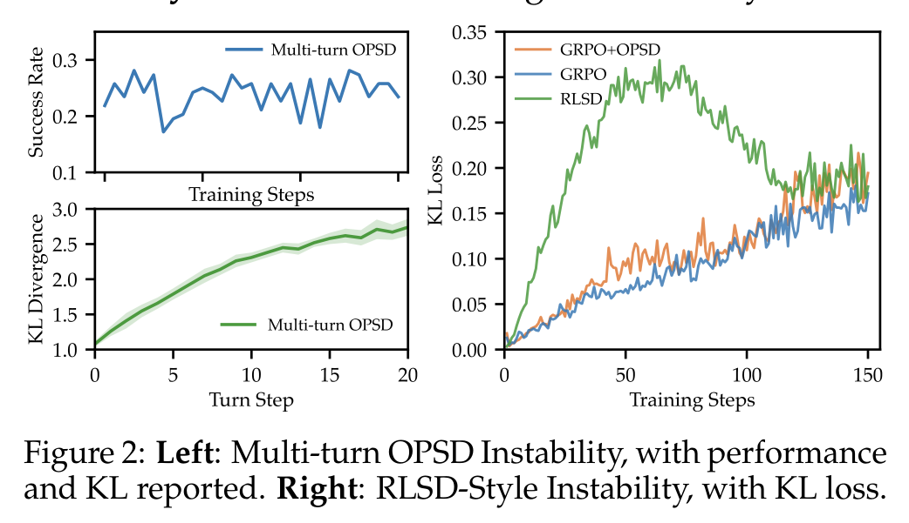
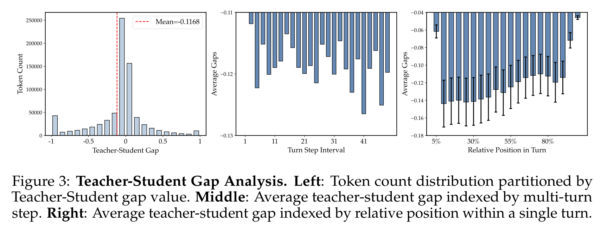
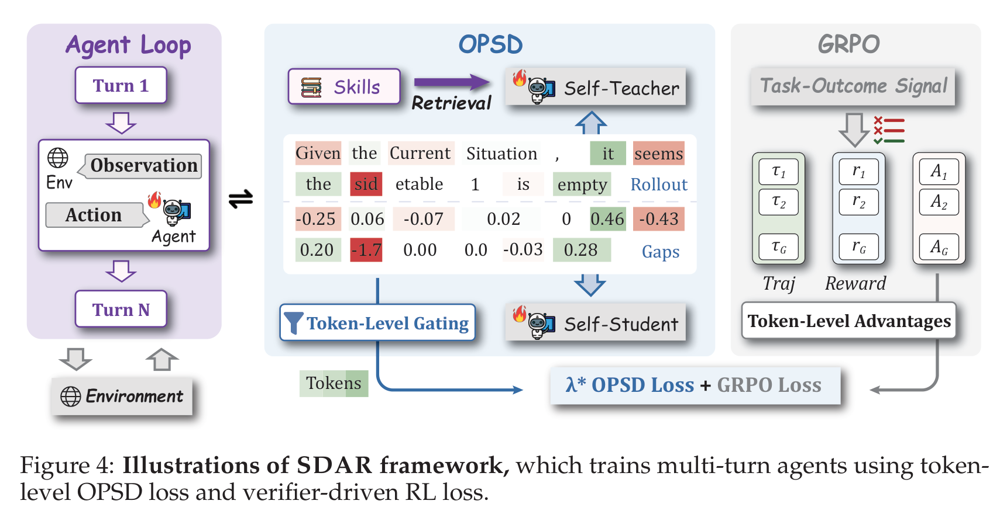
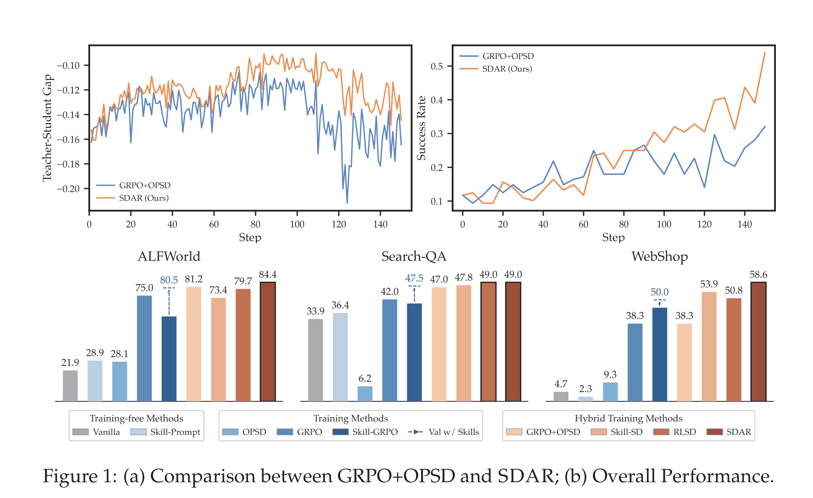
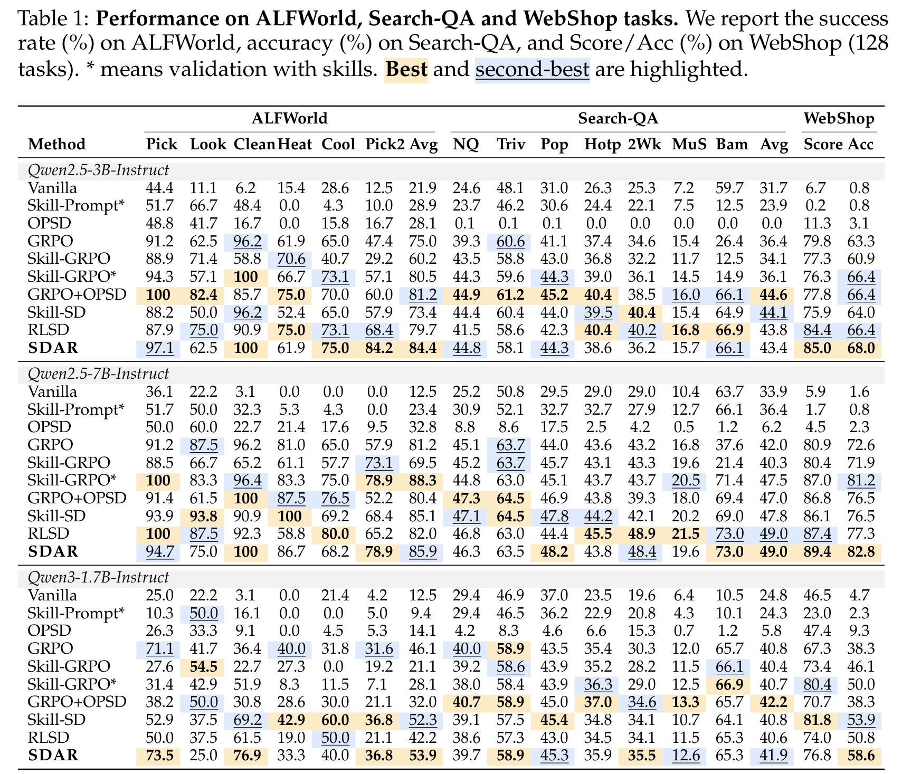
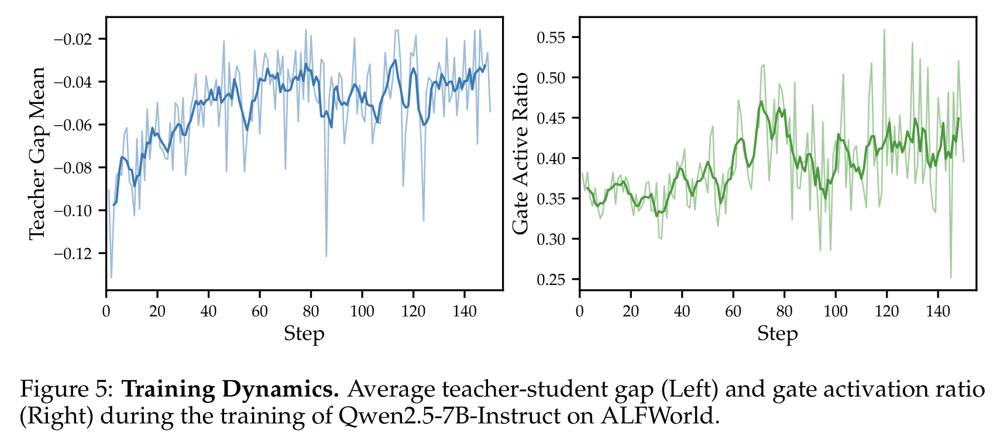
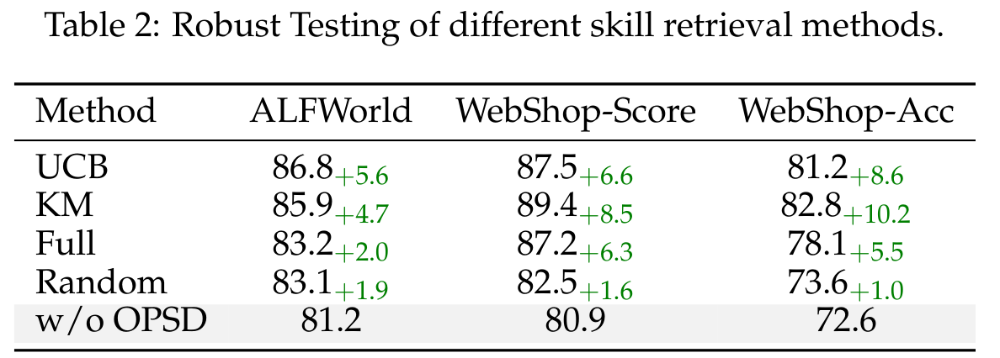
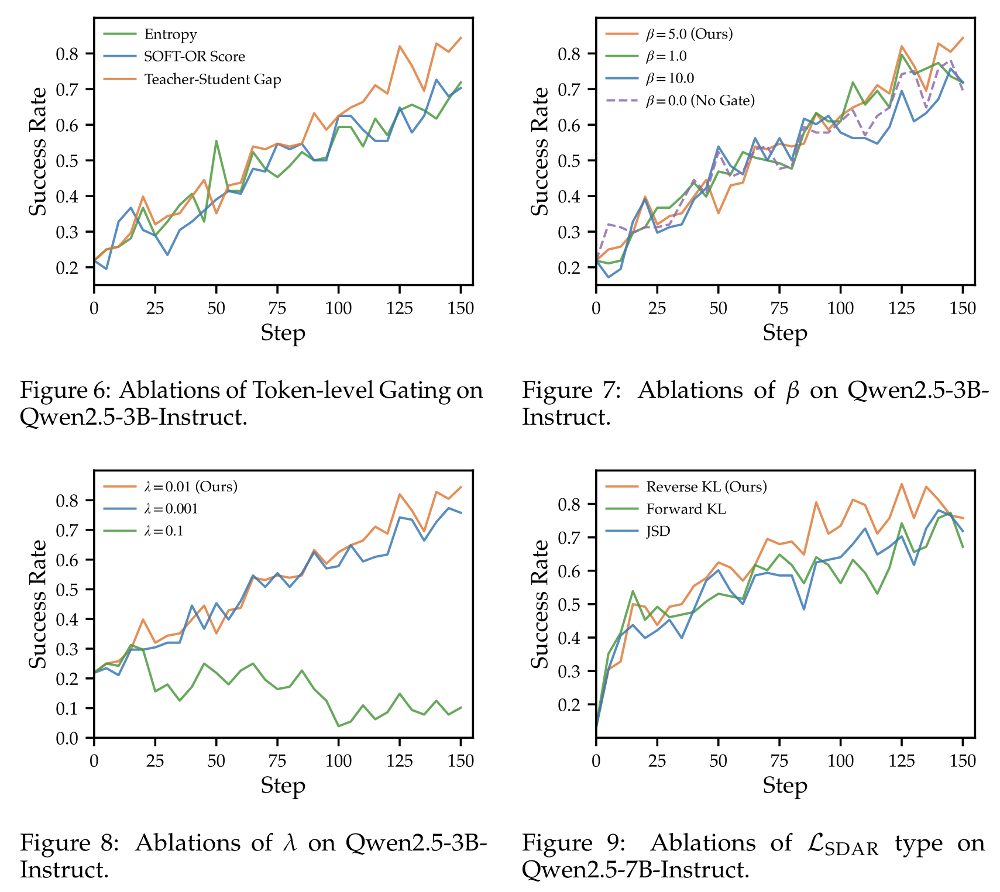
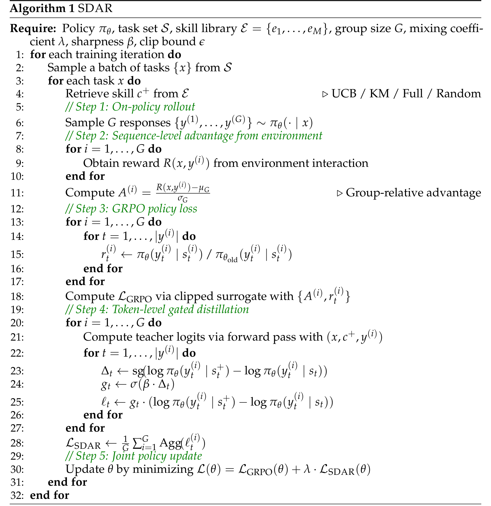

2026-05-14
《Self-Distilled Agentic Reinforcement Learning》中文阅读报告
把 GRPO 主目标和 gated OPSD auxiliary objective 结合，用 token-level teacher-student gap 控制 privileged context 的蒸馏强度。
1. 基本信息
- 论文：Self-Distilled Agentic Reinforcement Learning
- arXiv：2605.15155v1
- 日期：2026-05-14 提交
- 作者：Zhengxi Lu、Zhiyuan Yao、Zhuowen Han、Zi-Han Wang、Jinyang Wu、Qi Gu、Xunliang Cai、Weiming Lu、Jun Xiao、Yueting Zhuang、Yongliang Shen
- 机构：Zhejiang University、Meituan、Tsinghua University
- 链接：
- 论文：https://arxiv.org/abs/2605.15155
- PDF：https://arxiv.org/pdf/2605.15155
- 代码：https://github.com/ZJU-REAL/SDAR
- 主题关键词：agentic RL、multi-turn agents、GRPO、OPSD、self-distillation、privileged context、token-level gating、teacher-student gap、skill retrieval
2. 一句话总结
这篇论文提出 SDAR（Self-Distilled Agentic Reinforcement Learning）：在 multi-turn LLM agents 的 post-training 中，继续让 GRPO / RL 负责 trajectory-level task optimization，同时把 OPSD 退到 gated auxiliary objective 的位置，用 token-level sigmoid gate 选择性吸收 privileged teacher 的有益信号，避免 naive OPSD 或 GRPO+OPSD 在多轮环境中把不可靠 teacher guidance 放大成训练不稳定。
更短地说：SDAR 的核心不是“让 teacher 更强”，而是让每个 token 自己决定该不该信 teacher。positive-gap tokens 多学一点，negative-gap tokens 少学一点；RL 主目标不被改写，distillation 只做受控补充。
3. 背景与问题
Agentic post-training 和普通 single-turn reasoning 的差别在于，agent 的每一步 action 都会改变后续 observation，前面一步生成的 response 也会成为后续 context 的一部分。因此 agent training 同时面临两个问题：
- reward 通常是 trajectory-level 的，来自 environment 或 verifier，supervision 很 sparse。
- 多轮轨迹很长，早期错误会在后续 turns 中 compound，导致 token-level teacher signal 逐步变得不可靠。
论文讨论的两个 paradigm 是：
| Paradigm | 优点 | 问题 |
|---|---|---|
| RL / GRPO | 直接优化 task outcome，语义清楚 | reward 粗、稀疏，只在 trajectory / response level 给信号 |
| OPD / OPSD | 给 token-level dense guidance | 在 multi-turn agents 中 teacher-student drift 会累积，容易不稳定 |
OPSD 的 teacher branch 不是独立更强模型，而是同一个 policy 加上 training-only privileged context，例如 retrieved skills。这个设定很关键：teacher 并不总是可靠，只是多拿到了一些训练时信息。若 skill retrieval 或 skill utilization 出错，teacher 的 negative rejection 可能并不代表 student token 真错了。
论文因此提出一个判断：在 multi-turn agents 中，RL 应该继续是 primary optimization backbone，OPSD 应该变成 carefully controlled auxiliary role。
4. 核心观察
4.1 Multi-turn OPSD Instability
图：Multi-turn OPSD instability
内容：展示 naive OPSD / GRPO+OPSD 在多轮 agent training 中的 KL divergence 与 success rate 不稳定现象，说明直接叠加 token-level distillation 会破坏 RL 优化。

Figure 2 给出论文的第一个观察：student agent 一旦偏离 teacher-supported trajectory，原本有用的 token-level supervision 会随着 turn 数增加变得更不可靠。结果是 per-turn KL divergence 上升，task performance 下降。
右图还展示了 RLSD-style instability：如果直接用 teacher-student divergence 去 re-weight token-level RL advantages，早期 teacher-student mismatch 很大时，更新会被显著放大，反而伤害训练稳定性。
4.2 Asymmetric Trust in Privileged Guidance
OPSD 的 teacher-student gap 定义为：
Δ_t = log π_T(y_t | s_t^+) - log π_θ(y_t | s_t)其中 s_t^+ = (x, c^+, y_<t) 是 teacher context，包含 retrieved skills 等 privileged context；s_t = (x, y_<t) 是 student context。
解释这个 gap：
Δ_t > 0：teacher 比 student 更认可 student sampled token。这个 token 是 student 已经能生成、但还没完全 internalize 的行为，适合 distillation。Δ_t < 0：teacher 不认可这个 token。但 negative gap 不一定说明 token 错，也可能是 skill retrieval 不相关、teacher 没用好 skill、multi-turn drift 放大了早期 mismatch。
图：Teacher-Student Gap Analysis
内容：展示 teacher-student gap 的 token 分布、随 turn step 的变化以及 turn 内位置变化，说明 negative-gap tokens 很常见，且多轮展开会放大 mismatch。

论文在 Qwen2.5-3B-Instruct 上发现 negative-gap tokens 超过 50%，平均 gap 约为负值。这意味着如果 uniform distillation，也就是每个 token 都无差别听 teacher，会把大量不可靠的 negative guidance 注入 student。
因此作者主张 asymmetric trust：
- 对 positive teacher endorsements 更信任。
- 对 negative teacher rejections 更保守。
- 不要让 distillation 改写 RL advantage 的语义。
5. 方法详解：SDAR
5.1 总体框架
图：SDAR framework
内容：展示 SDAR 如何把 multi-turn agent rollout、skill retrieval、self-teacher / self-student gap、token-level gating、GRPO loss 组合到一个 joint objective 中。

SDAR 的总体 objective 是：
L(θ) = L_GRPO(θ) + λ_SDAR · L_SDAR(θ)这里 L_GRPO 是主目标，来自 environment / verifier reward；L_SDAR 是 token-level gated self-distillation auxiliary objective。这个分工很重要：SDAR 不把 teacher signal 塞进 RL advantage，也不让 distillation 主导 policy update，而是把它作为受控的 dense guidance。
完整训练流程可以拆成五步：
- 对 task
xretrieve 一个 skillc^+，作为 training-only privileged context。 - 用当前 policy 做 on-policy rollout，采样一组 trajectories。
- 从 environment interaction 得到 reward，计算 GRPO 的 group-relative advantage。
- 对每个 token 计算 teacher-student gap，并通过 sigmoid gate 得到 token-level trust weight。
- 优化
L_GRPO + λ · L_SDAR。
5.2 Skill Retrieval 与 Self-Teacher
SDAR 使用 skills 作为 c^+。这些 skills 是 compact structured demonstrations，可能包含 sub-goal decomposition 或 action templates。论文测试了四种 retrieval quality：
- UCB Retrieval：把 skill retrieval 看成 multi-armed bandit。
- Keyword Matching（KM）：按任务描述关键词匹配 skill。
- Full Retrieval：给更完整的 skill context。
- Random Retrieval：随机拿 skill，用来测试鲁棒性。
重要的是，skills 只在 training-time teacher branch 中使用。SDAR 不是 inference 时靠 skill prompting，而是希望把有用 skill knowledge internalize 到 policy parameters 里。
5.3 GRPO 主目标
对每个 input x，GRPO 采样 G 条 responses / trajectories，并基于 environment reward 得到 sequence-level advantage。它提供的是 task-outcome supervision，保留 RL 优化的清晰语义：
L_GRPO = clipped policy surrogate + KL penalty to reference policy在本文中，GRPO 解决“最后任务做没做成”的问题，但它无法告诉模型每个 token 该怎么写。因此需要 L_SDAR 提供 dense token-level complement。
5.4 Token-Level Gating
SDAR 的关键是 token-level gate：
g_t = σ(β Δ_t)其中 β 是 sigmoid sharpness，默认 β = 5.0。因为 σ 输出在 (0, 1)，所以 gate 是 bounded 的，不会像 raw gap 那样造成 unbounded token-level gradients。
直观理解：
| 情况 | Δ_t | g_t | 含义 |
|---|---|---|---|
| teacher 更认可 token | positive | 大于 0.5 | 多做 distillation |
| teacher 不认可 token | negative | 小于 0.5 | attenuate distillation |
| teacher-student 接近 | near zero | 约 0.5 | 中性、平滑过渡 |
论文比较了三种 gating strategies：
- Entropy gating：
g_t = σ(β h_t)，关注 student uncertain tokens。 - Gap gating：
g_t = σ(β Δ_t)，直接看 teacher-student gap。 - Soft-OR gating：组合 entropy 和 gap。
最终默认使用 gap gating，因为它最直接地表达 teacher 对 student sampled token 的 endorsement / rejection。
5.5 为什么要 stop-gradient
论文强调 gate 是 detached 的：g_t = sg(σ(β Δ_t))。这意味着 gate 只作为 confidence weight，不参与梯度反传。这样 L_SDAR 等价于一个 token-weighted likelihood objective：
L_SDAR = C - Agg(g_t log π_θ(y_t | s_t))好处是：
- auxiliary gradient 被
g_t ∈ (0,1)严格限制，不会放大超过 unweighted likelihood gradient。 - gate 越大，student 越被鼓励提高该 token 概率。
- 不 detaching gate 会引入 self-referential coupling term，可能导致不稳定。
这部分 theoretical analysis 的作用是解释：SDAR 不是随便加一个权重，而是刻意让 distillation 变成 bounded、monotonic、token-level curriculum。
6. 实验设计
6.1 Benchmarks
论文使用三类 agent benchmark：
| Benchmark | 任务性质 | 指标 |
|---|---|---|
| ALFWorld | text-based embodied household tasks，6 个任务类别 | success rate |
| Search-QA | search-augmented QA，包括 NQ、TriviaQA、PopQA、HotpotQA、2Wiki、MuSiQue、Bamboogle | accuracy |
| WebShop | web-based shopping agent，固定 128 validation tasks | score / accuracy |
Search-QA 中 NQ 和 HotpotQA 是 in-domain training data，其余 Search-QA datasets 是 out-of-domain evaluation。
6.2 Models 与训练设置
模型族：
- Qwen2.5-3B-Instruct
- Qwen2.5-7B-Instruct
- Qwen3-1.7B-Instruct
训练设置：
- SDAR 训练 150 steps。
- 使用 8 H800 GPUs。
- ALFWorld：每 batch 16 tasks，每 prompt 8 rollouts，max prompt length 2,048。
- Search-QA：每 batch 128 tasks，E5 retriever，max prompt length 4,096。
- WebShop：1000 training tasks，每 batch 16 tasks，每 prompt 8 rollouts，max prompt length 4,096。
- 默认
λ_SDAR = 0.01，β = 5.0。
6.3 Baselines
| Baseline | 含义 |
|---|---|
| Vanilla | base instruction model，不做额外 post-training |
| Skill-Prompt* | inference-time skill prompting |
| OPSD | standalone on-policy self-distillation |
| GRPO | RL baseline |
| Skill-GRPO | training-time skill-augmented GRPO，test without skills |
| Skill-GRPO* | Skill-GRPO at test time with retrieved skills |
| GRPO+OPSD | naive RL + OPSD auxiliary loss |
| Skill-SD | skill-conditioned self-distillation baseline |
| RLSD | 用 self-teacher gap re-weight RL advantages |
| SDAR | 本文方法 |
7. 主结果
图：Overall performance 与 motivation
内容：左侧比较 GRPO+OPSD 和 SDAR 的 teacher-student gap / success rate 动态；下方柱状图总结 SDAR 在 ALFWorld、Search-QA、WebShop 上相对多种 baseline 的整体优势。

图：Main results table
内容：汇总三种 base models 在 ALFWorld、Search-QA、WebShop 上的完整结果，是判断 SDAR 是否跨 model scale 和 task type 稳定有效的核心表格。

7.1 相对 GRPO 的提升
从 Table 1 看，SDAR 对 GRPO 有稳定提升：
| Model | ALFWorld Avg | Search-QA Avg | WebShop Acc |
|---|---|---|---|
| Qwen2.5-3B GRPO | 75.0 | 36.4 | 63.3 |
| Qwen2.5-3B SDAR | 84.4 | 43.4 | 68.0 |
| 提升 | +9.4 | +7.0 | +4.7 |
| Qwen2.5-7B GRPO | 81.2 | 42.0 | 72.6 |
| Qwen2.5-7B SDAR | 85.9 | 49.0 | 82.8 |
| 提升 | +4.7 | +7.0 | +10.2 |
| Qwen3-1.7B GRPO | 46.1 | 40.8 | 38.3 |
| Qwen3-1.7B SDAR | 53.9 | 41.9 | 58.6 |
| 提升 | +7.8 | +1.1 | +20.3 |
最明显的结果是：
- Qwen2.5-3B 在 ALFWorld 和 Search-QA 上收益大。
- Qwen2.5-7B 在 WebShop-Acc 上收益大。
- Qwen3-1.7B 作为更小模型，在 WebShop-Acc 上提升非常大，说明 gated distillation 对小模型内部化 skill knowledge 可能更关键。
7.2 避免 OPSD / GRPO+OPSD collapse
Standalone OPSD 在 Search-QA 上几乎 collapse，说明只有 token-level distillation、没有 task-level RL backbone 不够。Naive GRPO+OPSD 在某些设置下也会严重退化，例如 Qwen3-1.7B 的 ALFWorld Avg 为 32.0，低于 GRPO 的 46.1。
SDAR 的优势不是简单“多加一个 loss”，而是通过 gate 限制 auxiliary objective 的作用范围。它既保留 GRPO 的 task signal，又避免 OPSD 对不可靠 teacher guidance 的过度追随。
7.3 Skills Internalization
Skill-GRPO 在 test time 仍使用 retrieved skills；Skill-GRPO 不使用 skills。二者差距很大，例如 Qwen2.5-3B 的 ALFWorld Avg：Skill-GRPO 为 60.2，Skill-GRPO 为 80.5。这说明 Skill-GRPO 更像依赖外部 skill prompting，而没有充分 internalize skills。
SDAR test time 不需要外部 skills，但仍达到 Qwen2.5-3B ALFWorld 84.4 和 Qwen3-1.7B ALFWorld 53.9。这支持作者的 claim：token-level gated distillation 把 privileged knowledge 转移进 policy parameters，而不是只在 inference prompt 里临时调用。
8. Training Dynamics 与 Robustness
图：Training dynamics
内容：展示 Qwen2.5-7B 在 ALFWorld 训练中的 average teacher-student gap 和 gate active ratio。gap 长期为负，说明 teacher 并不总是更可靠；gate active ratio 后期上升，说明更多 tokens 进入可利用 teacher guidance 的阶段。

Figure 5 的意义很大：
- average teacher-student gap 长期为负，说明 privileged teacher 在平均意义上并不比 student 更认可 sampled tokens。
- 这解释了为什么 naive distillation 会伤害性能。
- 随着训练推进，gap 逐渐接近 0，gate active ratio 逐渐上升，说明 SDAR 不是固定 curriculum，而是让 token-level signal 随训练状态自适应变化。
图：Skill retrieval robustness
内容：比较 UCB、Keyword Matching、Full、Random 四种 retrieval quality。即使 Random Retrieval 也超过 w/o OPSD，说明收益不完全依赖高质量 retrieval，而来自 gated filtering。

Table 2 显示，在 Qwen2.5-7B 上，不同 retrieval strategies 都优于 w/o OPSD：
| Retrieval | ALFWorld | WebShop-Score | WebShop-Acc |
|---|---|---|---|
| w/o OPSD | 81.2 | 80.9 | 72.6 |
| Random | 83.1 | 82.5 | 73.6 |
| Full | 83.2 | 87.2 | 78.1 |
| UCB | 86.8 | 87.5 | 81.2 |
| KM | 85.9 | 89.4 | 82.8 |
这支持论文的核心论点：retrieval quality 当然有帮助，但 SDAR 的关键是 gated distillation 能过滤低质量 skill 带来的 noise。即使 random skills 可能产生 irrelevant guidance，gate 也会减少 negative teacher rejections 的破坏。
9. Ablation Studies
图：Ablation grid
内容：分别比较 gating strategy、sigmoid sharpnessβ、distillation coefficientλ和 distillation objective。整体说明 SDAR 的关键不是“加 distillation”，而是 gap gating、适中 β/λ 和 reverse KL 的组合。

9.1 Gating strategy
Teacher-Student Gap gating 优于 entropy gating 和 Soft-OR gating。原因是：
- entropy 只知道 student uncertain，不知道 teacher 是否真的有用。
- Soft-OR 会稀释选择性，只要某个分数中等偏高就可能激活。
- gap 直接衡量 teacher 对 student sampled token 的 endorsement / rejection，因此更精准。
9.2 β：sigmoid sharpness
β = 0 相当于 no gate / uniform distillation，会继承 naive OPSD 的 instability。β = 10 又过于接近 hard binary gate，失去 smooth modulation。β = 5 在实验中最好，说明 gate 需要“够有选择性”，但不能完全二值化。
9.3 λ_SDAR：distillation coefficient
λ = 0.01 最好。λ = 0.001 太弱，辅助信号不够；λ = 0.1 太强，distillation gradient 会压过 GRPO reward signal。由于 teacher 平均并不总是更可靠，过大的 λ 会把 student 推向 inferior behavior。
9.4 Distillation objective
Reverse KL 优于 forward KL 和 JSD。论文解释是：reverse KL 更 mode-seeking，更适合 student-sampled tokens 和 partial / weak teacher signals。Forward KL 更 mode-covering，容易让 student 覆盖 teacher 支持的所有模式，包括不可靠 guidance。
10. Algorithm 视角
图：SDAR algorithm
内容：给出 SDAR 的训练伪代码，显示它不是改变 GRPO rollout / reward 逻辑，而是在 GRPO policy loss 之外增加 token-level gated distillation。

Algorithm 1 可以压缩成下面的实现逻辑：
for each training iteration:
sample tasks
retrieve skill c+ for each task
rollout G responses with current policy
get environment reward and GRPO advantage
compute L_GRPO
for each generated token:
run teacher forward with privileged context c+
compute Δ_t = log p_teacher(y_t) - log p_student(y_t)
compute g_t = sigmoid(β Δ_t)
compute gated distillation loss
update policy with L_GRPO + λ L_SDAR实现上最需要注意的是：
- teacher forward 使用 same policy + privileged context，不是一个独立 teacher model。
g_t和 teacher log-prob 都要 detach。- distillation 只在 student-sampled tokens 上估计，不做 full-vocabulary KL。
- inference 不需要 skills。
11. 相关工作脉络
- GRPO / agentic RL：提供 task-level reward optimization，是 SDAR 的主干。
- OPD / OPSD：提供 on-policy token-level distillation。SDAR 继承其 dense guidance，但拒绝 uniform distillation。
- Skill-SD / RLSD：都尝试结合 RL 和 privileged self-distillation。SDAR 的区别是把 distillation 保持为 separate auxiliary objective，并用 bounded token-level gate 控制强度。
- TIP：启发了 token importance / token-level signal gating 的思路。
- SkillRL / SkillBank：提供 skill retrieval 和 skill-augmented agent context 的背景。
12. 论文的主要价值
第一，它抓住了 multi-turn agent training 中一个很实际的问题：teacher signal 不一定可靠，尤其在 privileged context 来自 retrieved skills 时，negative teacher guidance 可能只是 retrieval / utilization failure，而不一定是 student 错。
第二，它把 RL 和 OPSD 的角色分得很清楚。RL 保持 primary objective，distillation 只是辅助，不污染 advantage semantics。
第三，它的 token-level gate 很简单，但设计比较稳：bounded sigmoid、stop-gradient、gap-based activation，使辅助梯度不会爆，也不会无差别跟随 teacher。
第四，实验覆盖了 ALFWorld、Search-QA、WebShop 三类 agent tasks，并在 3B、7B、1.7B 三个 model scales 上展示稳定收益。
第五，ablation 比较完整，说明性能来自 gap gating、适中 β、适中 λ、reverse KL 的组合，而不是任意加 distillation 都有效。
13. 局限、风险与未回答问题
13.1 任务覆盖仍有限
论文覆盖了 embodied text game、search QA、WebShop，但还没有覆盖更复杂的 GUI agent、software engineering agent、long-horizon web automation 或 tool-use planning。SDAR 是否能在这些更开放的环境中稳定工作，还需要进一步验证。
13.2 SkillBank 质量与构造成本
SDAR 的 self-teacher 依赖 training-only privileged context，本文主要是 retrieved skills。虽然 Table 2 显示 random retrieval 也有收益，但更高质量 retrieval 仍能放大收益。实际落地时，SkillBank 如何构建、维护、去重和泛化，会影响系统成本。
13.3 没有解决 RL sparse reward 本身
SDAR 让 OPSD 成为更安全的 dense auxiliary signal，但 task success 仍依赖 environment reward / verifier reward。对于 reward 极稀疏、探索极难的 agent tasks，SDAR 本身不是探索算法。
13.4 Teacher 不是稳定 oracle
论文已经承认 self-teacher 只是 same policy + privileged context，不是更强 oracle。SDAR 的 gate 能 attenuate unreliable teacher guidance，但不能完全判断 teacher 是否逻辑正确。对于高风险任务，仍需要更可靠的 verifier 或 human evaluation。
13.5 复现成本较高
报告的训练设置需要 8 H800 GPUs，并且要配置 ALFWorld、WebShop、Search-QA、retriever server、SkillBank、GRPO rollout infrastructure。代码已发布，但端到端复现仍有明显工程门槛。
14. 复现与落地建议
如果要复现这篇论文，建议按风险从低到高推进：
- 先复现 Table 2 或单环境 ALFWorld。ALFWorld 比 WebShop / Search-QA 的工程依赖更可控。
- 先用 Qwen3-1.7B 或 Qwen2.5-3B 做 small-scale run，确认 loss 和 gate dynamics 正常。
- 必须记录
teacher-student gap mean、gate active ratio、OPSD loss、reward curve，否则很难诊断是 RL 问题还是 distillation 问题。 - 实现时优先检查 stop-gradient：
g_t和 teacher log-prob 不应把梯度传回 teacher branch。 - 先复现 gap gating，再做 entropy / Soft-OR ablation。
λ和β不宜随意放大。论文默认λ = 0.01、β = 5.0是较稳组合。- 若迁移到新 agent task，需要先定义 privileged context：可以是 skills、reference plans、tool manuals、domain demonstrations，但 inference time 不应依赖这些 context。
15. 术语表
| 术语 | 解释 |
|---|---|
| Agentic RL | 面向 multi-turn environment interaction 的 RL post-training |
| GRPO | Group Relative Policy Optimization，用 group-relative advantage 做 policy optimization |
| OPD | On-Policy Distillation，在 student 自己生成的 sequences 上做 distillation |
| OPSD | On-Policy Self-Distillation，用同一 policy 的 privileged branch 作为 teacher |
| Privileged context | training-only context，例如 retrieved skills，test time 不可用 |
| Self-teacher | same policy + privileged context 的 teacher branch |
| Teacher-student gap | teacher 与 student 对 sampled token 的 log-prob 差 |
| Token-level gating | 用 token-level signal 控制 distillation 强度 |
| Gap gating | 用 σ(β Δ_t) 作为 token-level trust weight |
| Stop-gradient | 阻断 gate / teacher log-prob 的梯度，使其只作为权重或常量 |
| Reverse KL | DKL(π_student || π_teacher)，更 mode-seeking，适合 student-sampled tokens |
| Skill retrieval | 从 SkillBank 中检索 task-relevant skills 作为 privileged context |
17. 总体评价
这篇论文的贡献很清楚：它没有试图发明一个复杂 agent framework，而是在“RL + privileged self-distillation”这个常见组合里，指出 naive distillation 在 multi-turn agents 中为什么会坏，并给出一个简单但有效的 token-level gate。SDAR 的强点是 role separation：RL 负责 task outcome，OPSD 只做 bounded auxiliary guidance。
我认为最值得借鉴的是它对 teacher signal 的态度。很多 distillation 方法默认 teacher 更可靠，而这篇论文明确说：在 skill-conditioned self-teacher 里，teacher 只是多了 context，不等于更强 oracle。因此 positive guidance 和 negative rejection 应该非对称处理。这一点对 tool-use、web agent、GUI agent、long-horizon planning 都有启发。
需要谨慎的是，SDAR 的收益仍建立在已有 SkillBank、environment reward 和较重训练基础设施上。它更像是一个稳定化和信号利用方法，而不是完整解决 agent exploration 或 skill acquisition 的方法。对于想做 agentic RL 的研究者，它是一个很实用的 recipe；对于想落地生产级 agent 的团队，还需要结合更可靠的 verifier、trajectory analysis 和任务级安全约束。